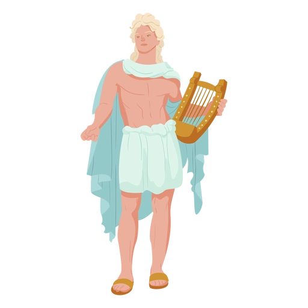
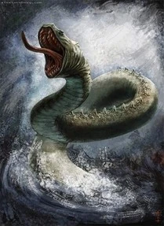

Así que no importaba cuántos años pasasen: el dios Apolo nunca podría borrar de su memoria a la bellísima Dafne, la ninfa que lo había enamorado en su juventud.
Apolo era el dios de la poesía y la música. Cuando conoció a Dafne, acababa de matar a la serpiente Pitón, un monstruo descomunal que tenía su guarida en una oscura cueva de la región griega de Tesalia. Pitón era una bestia aterradora que andaba en busca de carne a todas horas. Mataba a las ovejas de los pastores, a las vacas que pastaban en los valles, a los pastores que echaban la siesta a la sombra de los árboles y a las niñas que se bañaban en los arroyos. Desesperados, los hombres suplicaron a los dioses que los librasen de aquella pesadilla, y entonces Apolo viajó hasta Tesalia, se situó ante la cueva de Pitón y acribilló a la bestia con una lluvia de flechas. Pitón intentó defenderse, pero fue en vano, y perdió la vida sobre un charco de sangre.

Tras aquella hazaña, Apolo se volvió terriblemente orgulloso: se pasaba la vida hablando bien de sí mismo y presumiendo de la valentía que había demostrado al enfrentarse a Pitón.